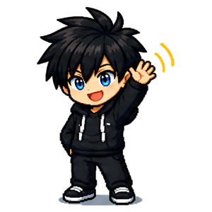
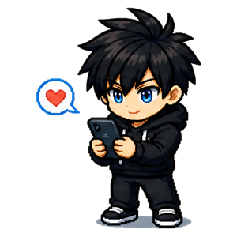
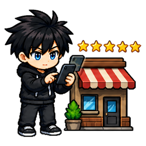
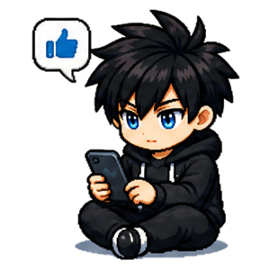
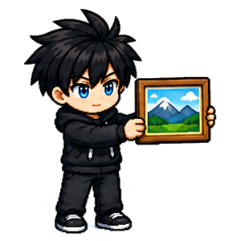

Habitudes sociales
Reprendre contact, entretenir ses liens, soutenir les autres. Sept habitudes qui prennent une minute et qui changent une journée — parfois deux.





À quoi servent les habitudes sociales
C'est la discipline la plus étrange à trouver dans une application de développement personnel, et sans doute la plus utile. Les six autres te font progresser toi. Celle-ci est la seule dont le bénéfice tombe d'abord sur quelqu'un d'autre — et revient ensuite, sans qu'on l'ait cherché.
Aller vers les autres
Dire bonjour, complimenter et être positif ne demandent aucune préparation, juste de franchir un pas minuscule. On pense énormément de bien des gens qu'on ne leur dit jamais, par pudeur ou par peur du ridicule. Un compliment sincère au bon moment reste dans la tête de quelqu'un bien plus longtemps qu'on ne l'imagine.
Entretenir ses liens
Envoyer un message à quelqu'un qui compte est l'habitude qu'on repousse le plus. Les amitiés ne se perdent presque jamais sur une dispute : elles s'éteignent sur un silence que personne ne décide, et que chacun croit être à l'autre de rompre. Au dernier palier, tu appelles au lieu d'écrire — parce qu'une voix ne se compare pas à un texte.
Soutenir
Rédiger un avis local, commenter et partager un travail font pencher la balance pour quelqu'un dont ce n'est pas ta responsabilité. Cinq minutes d'avis pour un artisan pèsent bien plus lourd pour lui que pour toi. Un commentaire construit vaut cent pouces levés. Et un partage peut relancer une personne qui allait arrêter.